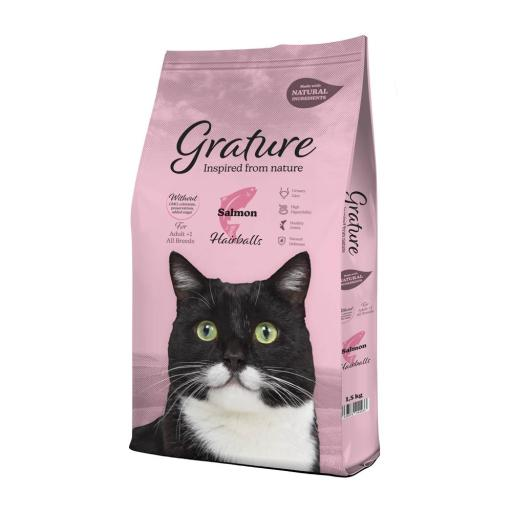

Gatos
Grature Pienso Anti Bolas de Pelo para Gatos Adultos (1.5 KG)
$ 8.41
Grature Salmón es una alimentación elaborada con ingredientes naturales para gatos adultos.
Su receta ha sido elaborada con salmón, anchoveta y atún que junto al arroz la convierten en una alimentación completa y equilibrada. Contiene un 34% de proteína, un 3% de fibra y un 15% de grasa.
Además contiene Vitamina A que refuerza las células de la retina, los cereales integrales que le aportan fibra e hidratos de carbono, condroprotectores para una buena salud articular y extracto de mejillón de labios verdes que les aporta un efecto antinflamatorio. Grature no se ha olvidado de un elemento esencial para los gatos, la Taurina por lo que contiene 1600mg/kg.
Grature Pienso de Pollo para Gatos Adultos Esterilizados (1.5 KG)
$ 7.21
Grature Pollo es una alimentación elaborada con ingredientes naturales para gatos adultos.
Su receta ha sido elaborada con una selección de carnes de ave y de buey pensada exclusivamente para gatos esterilizados por su bajo contenido en grasa, 12%, que, junto a la fibra, le ayudará a un buen mantenimiento y pérdida de peso si se desea.
Además, contiene Vitamina A que refuerza las células de la retina, los cereales integrales que le aportan fibra e hidratos de carbono, condroprotectores para una buena salud articular y extracto de mejillón de labios verdes que les aporta un efecto antinflamatorio. Grature no se ha olvidado de un elemento esencial para los gatos, la Taurina por lo que contiene 1600mg/kg.
Su croqueta con forma triangular ha sido diseñada para proporcionar una alta palatabilidad a tu gato, gracias a su olor a carne y su textura.
Hantu Pienso Adult Sterilised de Salmón para Gato (2KG)

$ 21.64
El pienso natural de Hantu Adult Sterilized de Salmón está diseñado para gatos adultos esterilizados.
Elaborado con ingredientes naturales de primera calidad, Hantu Adult Sterilized es un pienso premium que le aportará a tu gato una alimentación completa y equilibrada proporcionándole todos los nutrientes necesarios gracias a su alto contenido en salmón (30%).
EL 28% de los gatos están esterilizados, es por ello que necesitan una alimentación adecuada a sus necesidades. Como sabemos un gato esterilizado tiende a aumentar su peso y apetito por los cambios metabólicos que esto le produce con lo que es esencial controlar los niveles de energía, grasa y fibra que consume. Hantu Adult Sterilized contiene unos niveles apropiados de fibra para que tu gato se sienta saciado a la vez que consume la menor concentración calórica, ¡todo un logro de nuestros especialistas!